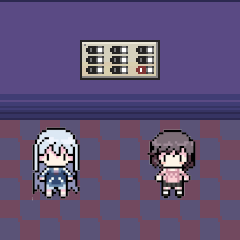

Sub-LSDC
...
"Ha llegado al piso subterráneo."

Wow, esta es sólo la planta baja pero parece una ciudad entera encerrada aqui abajo.
Creo que estamos en... ¿el lugar de ensamblaje de vehiculos aeronauticos?
No sé, pero ese teléfono, está sonando, deben ser los pibes
Ah, vayamos a contestar
Una explicación muy nerd por parte de Mati después...
Entonces, Maris... ¿qué procesaste de todo eso?
Um, tampoco estoy muy enterada pero Mati dijo que básicamente lo entenderíamos cuando vayamos a un tal "Núcleo".
Vale, bueno, según los carteles el núcleo está delante, ¡vamos!
 ???
—Bienvenidas al Núcleo.
???
—Bienvenidas al Núcleo.